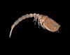

bodotriidae

Definition: Bodotriidae is a family of crustaceans belonging to the order Cumacea. Bodotriids have a worldwide distribution in shallow and deep waters. There are over 380 described species in over 30 genera, being the most diverse cumacean family. Their external morphology differs from other cumaceans by a combination of traits that independently are not unique to the family: the telson is fused to the last abdominal segment (last pleonite), the dorsal part of the mandible has a boat shape (naviculoid), exopods exist on the third maxilliped and the first peraeopod, and there is a uropodal endopod with one or two articles.
Source: Wikipedia
Wikipedia Page (Something wrong with this association? Let us know.)
Wikidata Page (Something wrong with this association? Let us know.)